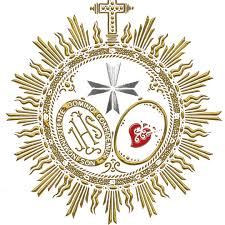
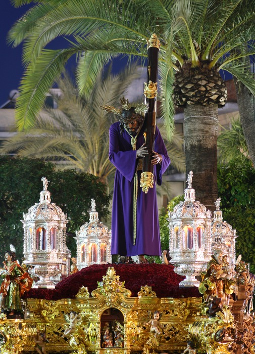

Gran Poder
Parroquia Santa María Magdalena Salida desde C/ Real Utrera, 31
Fervorosa Hermandad y Cofradia de Nazarenos de Nuestro Padre Jesús del Gran Poder, María Santisíma del Mayor Dolor y Traspaso y San Juan Evangelista

Numero de hermanos
390
Nazarenos
110
Autores
Nuestro Padre Jesús del Gran Poder es obra de Manuel Gutiérrez Reyes Cano (1901), restaurado por Sebastián Santos (1976) y Gutiérrez Carrasquilla (2004). María Santisíma del Mayor Dolor y Traspaso es obra de Manuel Gutiérrez Reyes Cano (1902), restaurada por Pineda Calderón (1965) y Gutiérrez Carrasquilla (2005). La Imagen de San Juan Evangelista es obra de Pineda Calderón (1954).
Capataces
José Carlos Gómez Cabrera en el Paso del Señor y José Manuel Pedrera Colorado en la Santisíma Virgen.
Música
No lleva.
RECORRIDO
| Hora Aprox. | Cruz de guía |
|---|---|
| 1:00 | Salida |
| 2:00 | Manuel de Falla |
| 3:00 | Santa María Magdalena |
| 4:00 | Avenida Sevilla |
| 5:00 | Anibal Gonzále< |
| 5:50 | Carrera Oficial |
| 6:15 | Entrada |